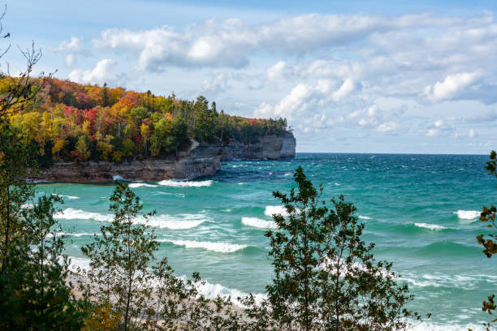

There are many famous waterways throughout the whole world. For instance one of the best fishing areas for saltwater monsters such as king salmon and halibut, is off the coast of Alaska. Now the ocean is full of a variety of beautiful fish to try and catch, but some would argue that the freshwater rivers within the United States are even better than the oceans. The Missouri River is the longest river in the entire United States, traveling an astounding 2341 miles. It rises into the Rocky Mountains of western Montana and flows all the way down North of Saint Louis before dumping into the Mississippi River. What makes The mighty Missiouri River even better is that it is home to over 200 species of fish. It also comes with spectacular views that will drop anyones jaw. Another famous place to cach massive fish are the 5 Great Lakes of the United States. These lakes consist of Lake Superior, Lake Huron, Lake Michigan, Lake Ontario, and Lake Erie. These Great Lakes are hotspots for catching monster Lake Trout, Walleye, and Northern Pike.